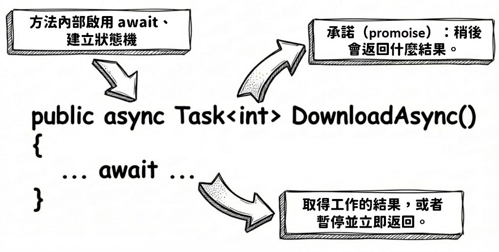
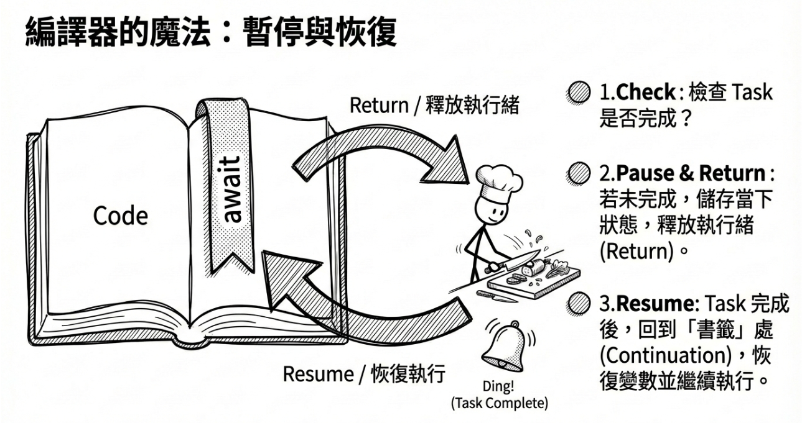
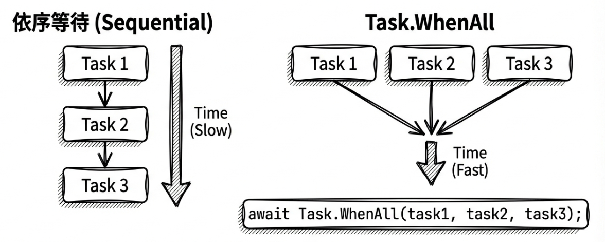
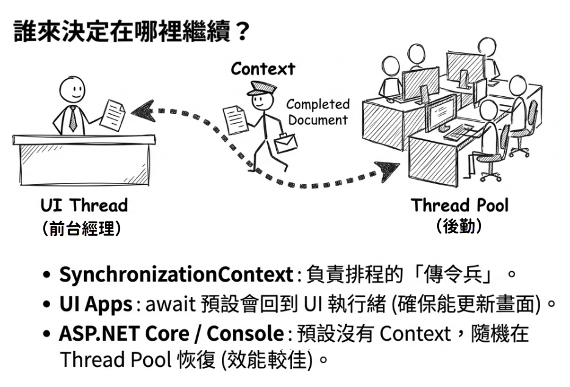
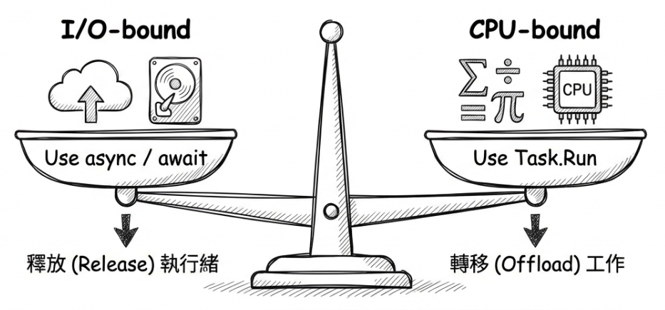

第 3 章：async 與 await
在上一章，我們學會了使用 Task.Run 來建立背景工作，並透過 Task 物件追蹤它的狀態。不過，我們也同時發現，若用 .Wait() 或 .Result 來取得結果，就會阻塞（block）當前執行緒，這等於又把我們帶回最初想解決的「卡頓」問題。
那麼，有沒有一種方法可以「非同步地等待」一個 Task 完成呢？
這正是 C# 提供的 async 與 await 關鍵字要解決的事。它們是 C# 編譯器提供的語法糖（syntactic sugar），能讓我們用近乎同步程式碼的寫法，實現複雜的非同步控制流程。可以說，async/await 是現代 .NET 非同步程式設計的基石。
本章會帶你進一步理解 async/await。讀完之後，你將能夠：
- 使用
async與await來撰寫簡潔、可讀性高的非同步程式碼。 - 理解非同步方法的控制流是如何在
await處暫停與恢復的。 - 運用
Task.WhenAll、Task.WhenAny與Task.WhenEach來併發執行多個非同步工作。 - 了解
SynchronizationContext如何影響程式碼的執行緒。 - 掌握
ConfigureAwait(false)的使用時機與重要性。 - 知道為什麼應該極力避免使用
async void。
async 與 await 如何簡化非同步流程
要看出 async 與 await 解決了什麼問題，可以先想像一個沒有它們的世界。假設現在要寫一個方法，非同步地從網路下載一個網頁，並回傳它的字數。
在 async/await 出現之前，我們主要依賴 Task 物件的 ContinueWith 方法來串接非同步工作。它的作用是註冊一個「前一個工作完成後，接著執行……」的回呼（callback）。這種方式雖然解決了阻塞問題，但寫法相當繁瑣：
static readonly HttpClient httpClient = new HttpClient();
// 使用 ContinueWith 的傳統寫法 (複雜且難以閱讀)
static Task<int> DownloadPageAndCountCharsLegacy(string url)
{
// 1. 開始非同步下載
return httpClient.GetStringAsync(url).ContinueWith(downloadTask =>
{
// 2. 下載完成後，這個區塊才會被執行
string content = downloadTask.Result;
return content.Length;
});
}這種寫法裡滿是 lambda 運算式。如果流程再複雜一點，例如下載完還要解析、再存入資料庫，很快就會形成所謂的「回呼地獄（callback hell）」，程式碼會變得難讀，也不好維護。
Note
本書範例會使用可重複使用、生命週期較長的
HttpClient物件來共用連線，因為每次都建立新的HttpClient物件可能造成 socket 耗盡。不過，單純重複使用一個靜態HttpClient物件僅稱得上「堪用」。更好的做法是使用IHttpClientFactory。細節可參閱微軟文件：使用 IHttpClientFactory 實作韌性的 HTTP 請求。
接著看同一件事用 async 與 await 會怎麼寫：
原始碼： DemoDownloadPage
程式碼看起來幾乎和同步版本一模一樣。這就是 async/await 最巧妙的地方。下面分別拆解這對關鍵字到底做了什麼。
async 關鍵字
先從 async 開始。async 是一個方法修飾詞。當你把一個方法標記為 async，其實是在告訴編譯器兩件事：
- 這個方法內部會使用
await關鍵字。 - 編譯器需要將這個方法轉換成一個「狀態機（state machine）」。稍後會進一步說明這個狀態機是怎麼運作的。
async 方法常見的回傳型別包括 Task、Task<T>、ValueTask 與 ValueTask<T>。這也呼應了我們在第二章學到的觀念：非同步操作的回傳值，本質上是一個「承諾」（promise）或「未來憑證」（future）。
當然，也有少數特殊情況，例如事件處理常式會使用 void，非同步迭代器會使用 IAsyncEnumerable<T>。

await 關鍵字
接著看 await。await 是一個運算子，用來等待可等待物件（awaitable）完成。它通常出現在 async 方法內，但也可以用於 async lambda、async 匿名方法、async 區域函式等支援 await 的語境中；在現代 C# 的頂層敘述（top-level statements）裡也可以使用。
當程式執行到「await 一個 Task」時，會依序發生以下事情：
- 檢查
Task狀態：await會先檢查它所等待的Task是否已經完成了。如果已經完成，程式就繼續往下執行，就像沒有await一樣。 - 暫停與返回：如果
Task尚未完成，await會在此處設定一個「恢復點」（continuation），然後立即將控制權返回給呼叫此async方法的程式碼或目前的執行環境。這一步很關鍵：它意味著當前的執行緒沒有被阻塞，可以去做其他事情。 - 恢復執行：當被
await的Task終於完成後，.NET 執行環境（runtime）會回到先前設定的「恢復點」，繼續執行async方法中剩下的程式碼。如果Task有回傳值 (Task<T>)，await運算式本身就會交出那個T型別的結果。
這個「暫停與恢復」的過程，就是由編譯器產生的狀態機在背後管理。你寫的是看似循序的程式碼，但編譯器會幫你把它 拆解 成多個區塊，並在適當的時機點恢復執行。
如果剛才的解釋還有點抽象，可以用廚師的畫面再想一次。有位廚師（執行緒）正在照著食譜（程式碼）做菜。當他遇到需要把牛排「送進烤箱烤 30 分鐘」的步驟時，也就是遇到 await I/O 操作，他不會站在烤箱前空等。
相反地，他會先在食譜上夾個書籤，記下目前做到哪裡，也就是編譯器建立的狀態機紀錄。接著，他可以先去忙別的事，或把控制權交還給目前的工作環境。等烤箱發出完成提示，也就是 Task 完成時，他再翻回那個書籤，接續下一個步驟，例如把牛排端出來擺盤。這就是恢復執行。

底層運作：狀態機
接著從編譯器的角度，看看 await 如何暫停並恢復執行。
Note
本節作為補充知識，會進一步解釋
async方法背後的運作原理。你可以選擇略過；但多了解一點編譯器如何轉換你的async方法，對日後除錯或效能調校多少會有些幫助。
當 C# 編譯器遇到 async 方法時，它會在幕後做不少工作。它會為這個方法產生一個實作了 IAsyncStateMachine 介面的隱藏類別，也就是所謂的「狀態機」。
在這個類別中，編譯器會根據你程式碼裡的每一個 await，將整個方法切割成不同的狀態（state）。
- 一開始狀態為
-1。當執行到第一個await且發現等待的工作尚未完成時，狀態機會將當前的狀態設定為0，儲存當下區域變數的值，並將自己的實例註冊到該Task的接續工作（continuation）中。接著它會直接return，將執行緒還給呼叫者。 - 當背景的
Task完成時，它會觸發並呼叫狀態機內的MoveNext()方法。 MoveNext()會根據之前記錄的狀態，利用goto指令精準跳躍到當初暫停的地方，把變數的值都還原，然後繼續往下執行。
換句話說，你之所以能用「同步的寫法」寫出「非同步的行為」，就是因為那些原本得手動處理的複雜狀態追蹤與回呼註冊，都已經交給編譯器產生的狀態機代勞了。
如果光靠文字描述仍然覺得抽象，下面用一段大幅簡化過的虛擬碼，來模擬前面的 DownloadPageAndCountCharsAsync 方法被編譯後所產生的狀態機。你可以搭配程式碼中的註解，試著理解它的內部運作邏輯：
// 編譯器產生的狀態機 (簡化過的概念虛擬碼)
class DownloadStateMachine : IAsyncStateMachine
{
int _state = -1; // 初始狀態為 -1
string _url; // 本來方法的傳入參數
string _content; // 本來的區域變數被提升為類別層級的欄位
TaskAwaiter<string> _awaiter;
public void MoveNext()
{
// 根據當前狀態，跳轉到對應的程式區塊
if (_state == 0) goto state_0;
// --- 狀態 -1 (執行到第一個 await 之前) ---
_awaiter = httpClient.GetStringAsync(_url).GetAwaiter();
// 如果工作沒有瞬間做完，就準備暫停
if (!_awaiter.IsCompleted)
{
_state = 0; // 改變狀態，記錄我們停在這裡
// 告訴 awaiter：「等你下載完，請再次呼叫我的 MoveNext()」
_awaiter.OnCompleted(this.MoveNext);
return; // 關鍵：立刻返回，把執行緒還給呼叫者！
}
state_0:
// --- 狀態 0 (從 await 之後恢復執行) ---
// 注意：goto 跳轉前，編譯器已確保所有欄位值（如 _content）都
// 已正確恢復，因此這裡的跳轉是安全的，不會造成堆疊混亂。
_state = -1; // 恢復預設狀態
_content = _awaiter.GetResult(); // 取得下載結果
int result = _content.Length;
// 將結果放入 Task 中，狀態機執行完畢
SetResult(result);
}
}從這段虛擬碼中，你可以更清楚看到 await 邊界是如何把一個原本循序漸進的方法，切開並轉換成透過 _state 與 goto 控制執行跳轉的狀態機。這也是 async/await 能夠不阻塞執行緒的關鍵原因。
寫作當下，微軟已釋出 .NET 11 最新預覽版。發行說明文件顯示，新一代的 runtime async 功能（將非同步狀態機的管理從「C# 編譯器」轉移到「.NET 執行階段」）已取得顯著進展。
根據官方資訊，在新版 JIT 的分層編譯（tiered compilation）、tail-await 最佳化，以及針對
Task/ValueTask內建方法（intrinsics）的最佳化加持下，runtime async 如今在某些情境下的效能，已經能追上甚至超越傳統由編譯器產生的狀態機模型，並大幅降低了暖機期間的記憶體配置。雖然這項機制仍在持續演進，實際效益也取決於具體的工作負載，但它確立了未來 .NET 非同步底層將變得更輕量、更快速的發展方向。更多技術細節可參閱官方的 .NET Runtime in .NET 11 Preview 7 - Release Notes。
同時等待多個工作：Task.WhenAll 與 Task.WhenEach
前面我們學會了如何 await 單一個非同步工作。但在真實應用中，一次只等一件事往往不夠用。我們常常需要同時執行多個非同步操作，例如同時下載多個網頁、同時查詢兩個不同的資料庫，或者同時呼叫多個 Web API。
這時候，如果我們還是一個接一個地 await，就會變成依序執行（sequential execution），等於失去非同步帶來的併發優勢。為了更充分利用系統資源，我們應該讓這些工作「同時」進行。本節會介紹 .NET 提供的幾個工具。
齊頭並進：Task.WhenAll
Task.WhenAll 是最常用的方法，它接受一群 Task，並回傳一個新的 Task。這個新 Task 會在所有傳入的工作都完成後才算完成。如果傳入的是 Task<TResult>，await Task.WhenAll 會回傳一個陣列 TResult[]，包含所有工作的執行結果。
Note
使用
Task.WhenAll時，若其中一個或多個工作拋出例外，await只會重新拋出 第一個 捕捉到的例外。如果你需要處理所有發生的例外，請檢查Task.WhenAll回傳之Task的Exception屬性（它是一個AggregateException）。詳見第 4 章。
先來比較「依序等待」與「同時等待」的差別。下面的範例假設下載每一個網頁都需要 1 秒鐘：
// ✘ 錯誤示範：依序執行並取得結果，效率低。
async Task SequentialDownloadAsync()
{
// 這會花費 1秒 + 1秒 + 1秒 = 3秒
string page1 = await httpClient.GetStringAsync("https://demo.com/1");
string page2 = await httpClient.GetStringAsync("https://demo.com/2");
string page3 = await httpClient.GetStringAsync("https://demo.com/3");
}
// ✔ 正確示範：併發執行，等全部工作完成後一次取出結果，效率高。
async Task ConcurrentDownloadAsync()
{
// 1. 啟動所有工作
// 注意：這裡都沒有 await，讓各項工作先各自分頭進行！
Task<string> task1 = httpClient.GetStringAsync("https://demo.com/1");
Task<string> task2 = httpClient.GetStringAsync("https://demo.com/2");
Task<string> task3 = httpClient.GetStringAsync("https://demo.com/3");
// 2. 等待全部完成 (Await all)
// 這只會花費大約 1秒 (取決於最慢的那個請求)
string[] results = await Task.WhenAll(task1, task2, task3);
}原始碼： DemoTaskWhenAll

只取其一：Task.WhenAny
有時候，我們不需要等全部完成，只要其中一個先完成就夠了。Task.WhenAny 就是為此而生。它接受一群 Task，並在任何一個工作完成時，無論是成功、失敗還是取消，立即回傳那個已完成的 Task。
常見的使用情境包括：
- 備援機制（redundancy）：同時呼叫三個提供相同服務的伺服器，誰先回應就用誰的資料。
- 逾時控制（timeout）：同時等待「主要工作」與「計時工作 (
Task.Delay)」，看誰先完成。如果計時工作先完成，就代表逾時了。
以下範例示範如何利用 Task.WhenAny 搭配 Task.Delay 實作逾時控制：
async Task<string> DownloadWithTimeoutAsync(string url)
{
using var cts = new CancellationTokenSource();
Task<string> downloadTask = httpClient.GetStringAsync(url, cts.Token);
Task timeoutTask = Task.Delay(3000, cts.Token); // 3秒逾時
// 等待兩者之一完成
Task completedTask = await Task.WhenAny(downloadTask, timeoutTask);
if (completedTask == timeoutTask)
{
// 逾時了！取消下載工作並拋出例外
cts.Cancel();
throw new TimeoutException("下載作業逾時。");
}
// 下載先完成，順便取消 timeoutTask，避免它繼續無意義地計時
cts.Cancel();
// 下載先完成，取得結果
return await downloadTask;
}這段程式的重點在於：Task.WhenAny 回傳的是「先完成的那個工作」，而不是下載結果本身。因此，確認先完成的是 downloadTask 之後，仍然要再 await downloadTask 一次，才能取得下載內容或讓下載過程中的例外正常拋出。
原始碼： DemoTaskWhenAny
依序處理完成的工作：Task.WhenEach (.NET 9)
除了「等全部完成」和「搶第一個完成」，還有另一個很常見的需求：先發動多個非同步工作，然後每當有一個完成時，就立刻處理它，例如更新 UI 進度條，而不是等到全部都做完才一次處理。
在 .NET 9 之前，要實現這個模式，通常得搭配 Task.WhenAny 寫一個 while 迴圈，並不斷從任務清單中移除已完成的工作。那樣的程式碼既冗長又容易出錯，時間複雜度也會變成 \(O(N^2)\)。
為何
Task.WhenAny搭配迴圈是O(N^2)？假設你有 N 個任務。每次呼叫
Task.WhenAny(tasks)時，它內部需要為清單中每一個任務逐一註冊回呼（花費 \(O(N)\) 時間）。接著，從List<Task>中Remove完成的任務，又是一個需要挪動陣列元素的 \(O(N)\) 操作。第一圈花費 \(O(N)\)，第二圈花費 \(O(N-1)\)，以此類推直到最後一個。根據等差級數公式，總體時間複雜度會落在 \(O(N^2)\)。
如果我們用一個簡化的模型來看：若有 1,000 個任務，這類 \(O(N^2)\) 的寫法在底層的累計成本將非常可觀；而
WhenEach的底層優化則能讓整體複雜度降至 \(O(N)\)。這代表當任務數量一多（例如伺服器同時處理數千個請求），使用WhenAny搭配迴圈的效能就會急遽惡化，而WhenEach則能保持穩定。
.NET 9 引入了 Task.WhenEach。如果傳入的是 Task<TResult>，它會回傳 IAsyncEnumerable<Task<TResult>>；如果傳入的是非泛型 Task，則會回傳 IAsyncEnumerable<Task>。因此，我們可以直接用 await foreach 逐一處理每一個完成的工作。這不僅語法更乾淨，底層的時間複雜度也被大幅優化至 \(O(N)\)。
來看看實際的用法：
// .NET 9+ 的新寫法：乾淨、直觀
async Task ProcessTasksAsTheyCompleteAsync()
{
var tasks = new List<Task<int>>();
for (int i = 1; i <= 5; i++)
{
tasks.Add(DoWorkAsync(i)); // 假設 DoWorkAsync 回傳 Task<int>
}
// 這裡的 t 代表一個「已經完成」的工作
// 迴圈會依照「完成的順序」迭代，而不是原本串列的順序！
await foreach (Task<int> t in Task.WhenEach(tasks))
{
try
{
// 這裡 await 只是為了取得結果或例外，不會阻塞
int result = await t;
Console.WriteLine($"完成了一個工作，結果是：{result}");
}
catch (Exception ex)
{
Console.WriteLine($"有個工作失敗了：{ex.Message}");
}
}
}這裡特別留意一下 await foreach (... in Task.WhenEach(tasks)) 這個迴圈。它會依照「工作完成的順序」迭代，而不是 tasks 串列原本的順序。換句話說，每完成一個工作，就會立刻跑一次迴圈去處理那個剛完成的工作。
原始碼： DemoTaskWhenEach
Task.WhenEach 大幅簡化了這類「一有結果就處理」的模式，是 .NET 9 很實用的新功能。如果你的目標框架是 .NET 9 或更新版本，遇到這類需求時，它應該是首選的工具。
控制流的走向：SynchronizationContext 的角色
了解 await 的暫停與恢復之後，接著要看另一個關鍵細節：當 Task 完成後，await 後面的程式碼究竟會在哪一條執行緒上恢復執行？
答案不是固定的，它取決於當時是否存在一個 SynchronizationContext。
SynchronizationContext 是一個抽象類別，它提供了一種把工作（callback）派送到特定環境去執行的抽象機制。在理解上，你可以暫時把它想像成一個「傳令兵」或「派送者」（但請注意，它與負責分配執行緒的 TaskScheduler 是不同的東西）。在 await 執行暫停並將控制權交還給呼叫端之前，它會先捕捉當前的 SynchronizationContext，留著備用。
打個比方，在 UI 應用程式中，UI 執行緒就像餐廳裡唯一能操作收銀機和接待客人的前台經理。他去交代廚房備料，也就是發動非同步操作後，後續仍然要回到櫃台。
而 SynchronizationContext 就像一個盡責的「傳令兵」：它確保廚房把料備好後，後續動作，例如在收銀機上結帳或更新 UI 畫面，會被排程交還給這位前台經理來完成，而不是讓廚房裡的人直接碰收銀機。

不同類型的應用程式，其 SynchronizationContext 的行為也不同：
UI 應用程式（WPF, MAUI, WinForms）：主 UI 執行緒上有一個專屬的
SynchronizationContext。它的工作就是確保任何排程給它的程式碼，都會回到原始的 UI 執行緒上執行。這非常方便，因為所有更新 UI 元件的操作都必須在 UI 執行緒上進行。await會自動幫我們處理這個切換。傳統 ASP.NET（ASP.NET 4.x）：每個 HTTP 請求都有一個專屬的
SynchronizationContext（也就是AspNetSynchronizationContext）。它的作用與 UI 應用程式類似，會試圖將await之後的程式碼帶回該請求原本的 request context，以確保像是HttpContext.Current這種存取請求狀態的操作能夠正常運作。主控台應用程式（Console App） / ASP.NET Core：預設情況下，沒有
SynchronizationContext。在這些環境中，當await的工作完成後，後續程式碼不保證回到原本的執行緒；它可能就在完成工作的那條執行緒上接著跑，也可能由 執行緒集區（thread pool） 排程到其他可用執行緒上繼續執行。
Note
ASP.NET Core 在設計之初，微軟團隊就刻意移除了
SynchronizationContext。這個架構上的重大改變，消除了 ASP.NET 4.x 中常見的context switch成本與死結問題，也是 ASP.NET Core 效能大幅躍升的關鍵原因之一。因此，在 ASP.NET Core 專案中，ConfigureAwait(false)技術上不再必要（因為根本沒有 context 需要切換）；但許多函式庫仍保留這個寫法，以確保在各種環境下都能正常運作。
該用 async/await 還是 Task.Run？
初步認識 async/await 之後，往往會冒出一個困惑：「既然 await 這麼好用，那是不是所有背景工作，包括複雜運算，都應該用 await 去處理？」
這個問題的關鍵，在於第 2 章討論過的 I/O-bound（輸入/輸出密集型）與 CPU-bound（運算密集型）的差異：
- I/O-bound 作業的核心精神是「釋放執行緒」。這是
async/await的主戰場。使用await（有時搭配ConfigureAwait(false)）能以極低的成本達成非阻塞等待。在等待網路或資料庫回應的期間，我們不需要犧牲一條執行緒在原地空等。 - CPU-bound 作業的核心精神是「轉移工作」。這裡仍是
Task.Run的主戰場。你必須明確地把繁重運算移交給執行緒集區（thread pool），以免佔用 UI 執行緒或主要的處理序。
這兩者的邊界其實很清楚。如果混淆了它們，就很容易寫出有問題的程式碼。

Note
最常見的反模式（anti-pattern），就是用
Task.Run來包裝一個純 I/O-bound 的async方法。 例如：Task.Run(() => httpClient.GetStringAsync(url))。這不僅多此一舉，而且通常有害。它會額外增加一次不必要的排程與執行緒切換成本；明明原本的 I/O 非同步 API 就已經能在等待期間釋放執行緒，卻還要先透過
Task.Run把工作丟進執行緒集區。記住一個簡單的口訣：
async/await的目標是非同步（asynchrony），追求在等待 I/O 期間釋放執行緒的高效能。Task.Run的主要作用是卸載（offloading），把 CPU 密集型工作移交給執行緒集區，以免佔用 UI 執行緒。請注意，單一次Task.Run不保證「平行執行」或充分發揮多核心；若要達到真正的平行（parallelism），仍須將工作分割，或使用Parallel、PLINQ 等平行處理工具。
另一種常見的誤用則是：在 UI 應用程式的 async 方法裡直接執行 CPU 密集計算，卻沒有用 Task.Run 卸載。這會導致 UI 執行緒在計算期間被佔住，造成介面凍結。以 WPF 為例，先看錯誤的做法：
此範例的 PerformHeavyCalculation() 會一直佔用 UI 執行緒，直到計算完成。在此期間，介面完全無法回應使用者的操作。
正確的做法是用 await Task.Run(...) 把繁重的計算卸載到執行緒集區，讓 UI 執行緒能繼續處理使用者的操作：
Warning
上述
Task.Run的技巧適用於 UI 應用程式，但不適用於 ASP.NET Core Web API。在 ASP.NET Core 中，處理 HTTP 請求的執行緒本身就是 thread pool 執行緒，使用Task.Run只是把 CPU 工作從一條 thread pool 執行緒搬到另一條，總共佔用的執行緒數量不會減少，反而還增加了排程與執行緒切換的開銷。如果伺服器端有 CPU 密集的需求，應考慮使用背景服務（background service）或訊息佇列等機制來處理。
釐清這條界線之後，就更容易理解為何 await 一個操作可以不阻塞 UI 執行緒：因為在等待真正的非同步 I/O 或計時器（timer） 完成的期間，根本不需要一條執行緒在原地阻塞等候。（相對地，如果呼叫的是以同步路徑模擬的 API，仍可能佔用執行緒。）接著，我們要來探討 ConfigureAwait。
UI 執行緒與 ConfigureAwait(false) 的重要性
在 UI 應用程式中，await 預設會把後續程式碼帶回原始的 UI 執行緒，這在需要更新 UI 時當然很好。但如果 await 後面的程式碼根本不需要碰 UI 元件呢？例如它只是做一些純計算，或把結果寫入檔案。
在這種情況下，強制回到 UI 執行緒不但沒有必要，還可能形成效能瓶頸。而且，如果使用不當，甚至可能引發死結（deadlock）。
為何會發生 UI 死結？
想像一個常見的錯誤情境：你在 UI 執行緒（例如 Windows Forms 或 WPF 的按鈕點擊事件）中呼叫了一個非同步方法，但卻貪圖方便，直接呼叫了
.Result或.Wait()來「同步」等待它完成。
- UI 執行緒呼叫了
.Result，於是 UI 執行緒被阻塞了，停在原地等待。- 背景的
Task完成了工作，因為沒有加ConfigureAwait(false)，它試圖把後續的程式碼（continuation）排程回原來的 UI 執行緒上執行。- 但此刻 UI 執行緒正被第一步的
.Result阻塞著，根本無法處理這個背景任務傳回來的要求！- 於是，背景工作等 UI 執行緒空出來，UI 執行緒等背景工作完成——死結就這樣誕生了，整個應用程式完全卡死。
為了解決這個問題，.NET 提供了 ConfigureAwait(false) 方法。當你在一個 Task 後面加上它，就等於是在告訴 await：
「我不在乎你待會在哪條執行緒上恢復執行，請不要嘗試回到原本的
SynchronizationContext。」
若沒有呼叫 ConfigureAwait，預設值是 true，也就是 await 會盡量回到原本的 SynchronizationContext。

下面用一個範例來看如何在類別庫（class library）中正確使用 ConfigureAwait(false)，以避免不必要的執行緒切換與潛在死結：
// 假設這是在一個通用類別庫中
public class MyApiClient
{
static readonly HttpClient httpClient = new HttpClient();
public async Task<JsonNode> GetDataFromApiAsync(string url)
{
// 1. 開始非同步下載
string json =
await httpClient.GetStringAsync(url)
.ConfigureAwait(false); // <--- 關鍵！
// 2. 後續程式碼不會被強制帶回原本的 SynchronizationContext。
// 實際在哪條執行緒上恢復執行，則不一定。
return JsonNode.Parse(json);
}
}使用 ConfigureAwait(false)，通常是撰寫通用類別庫（class library）時的建議作法。因為你在寫類別庫時，不會知道將來有哪些類型的應用程式會拿它來用；透過明確指定 ConfigureAwait(false)，通常可以避免不必要的 context switch，也能降低某些潛在的死結（deadlock）風險。
Note
如果你在撰寫不需要回到原本 context 的程式碼（特別是開發會被其他專案共用的類別庫時），就應該認真考慮使用
.ConfigureAwait(false)。但如果後續程式碼需要操作 UI、存取特定 request context，或依賴呼叫端環境，就不應盲目套用。
延伸閱讀： ConfigureAwait FAQ by Stephen Toub
避免 async void
在掌握了 async 搭配 Task 的標準用法後，你可能會注意到，C# 語法其實也允許我們寫出回傳型別為 void 的 async 方法。然而，這往往是一個危險的陷阱。
先說結論：在一般方法中，async 最常見的回傳型別是 Task、Task<T>，以及為了效能優化而生的 ValueTask 及其泛型版本 ValueTask<T>；此外還有像事件處理常式這類特殊情況使用的 void。在決定回傳型別時，你應該永遠優先使用 Task 家族，並極力避免 async void。
為什麼 async void 如此危險？它主要有兩大問題：
- 例外無法被捕捉：從
async void方法中拋出的例外，無法被呼叫端的try-catch區塊捕捉到。這樣的例外會被重新拋出到方法啟動當下所捕捉的SynchronizationContext所在的執行緒上（例如 UI 執行緒）；若當時沒有SynchronizationContext，則會在執行緒集區的執行緒上拋出。在大多數情況下，這會導致你的應用程式直接崩潰。 - 無法被等待：呼叫端無法
await一個async void方法，因此完全不知道這個非同步操作何時完成。這讓程式的流程變得難以追蹤與測試。
既然如此，async void 還有存在的理由嗎？有，但只有一個合法的使用情境，就是事件處理常式（event handler），例如按鈕點擊事件。原因在於，.NET 標準的事件委派，例如 EventHandler，回傳型別本來就是 void。如果你把事件處理常式宣告成 async Task，方法簽章就會和委派不符，進而導致編譯錯誤。也正因如此，C# 才特別允許 async void 這種寫法作為特例，讓開發者能在事件處理常式中順利使用 await。
下面這個範例展示的就是這個「唯一」的合法情境。請特別留意：既然外層捕捉不到 async void 丟出的例外，你就必須像下面示範的那樣，在方法內部用 try-catch 把所有可能的錯誤攔下來並妥善處理：
重點
除非你在寫事件處理常式，否則請一律使用
async Task或async Task<T>。
結語
本章介紹了 async 與 await 的核心概念。這對關鍵字透過編譯器產生的狀態機，讓我們能以近乎同步的語法，寫出易於理解、而且不會阻塞執行緒的非同步程式碼。
我們也學到了，await 如何在 SynchronizationContext 的幫助下，決定後續程式碼該在哪裡恢復執行，以及如何使用 ConfigureAwait(false) 來優化這個行為。同時，我們也理解了 async void 帶來的風險，並知道它只該出現在什麼場合。
掌握了 async/await 的基礎後，我們已經具備了撰寫現代非同步程式碼的核心能力。不過，真實世界的應用程式還會面臨更多挑戰，例如：如何處理非同步操作中發生的錯誤？又該如何取消一個已經開始、但後來不再需要的非同步任務？
這些問題，將是我們下一章要探討的主題。